## Checks if the required file is present, and downloads if not
if(!file.exists("raw_data/gapminder.csv")) {
dir.create("raw_data/",showWarnings = FALSE)
download.file("https://raw.githubusercontent.com/markdunning/markdunning.github.com/refs/heads/master/files/training/r/raw_data/gapminder.csv", destfile = "raw_data/gapminder.csv")
}Introduction to R - Part 3
Overview
Further data exploration and manipulation with ggplot2 and dplyr
Topics covered
- Customising ggplot2 plots
- Summarising data
- Group-based summaries
- Joining data
- Data Cleaning
Lets make sure we have read the gapminder data into R and have the relevant packages loaded.
We also discussed in the previous part(s) how to read the example dataset into R. We will also load the libraries needed.
library(readr)
library(ggplot2)
library(dplyr)
gapminder <- read_csv("raw_data/gapminder.csv")Customising a plot
Now make a scatter plot of gdp versus life expectancy as we did in the previous session. One of the last topics we covered was how to add colour to a plot. This can make the plot more appealing, but also help with data interpretation. In this case, we can use different colours to indicate countries belonging to different continents. For example, we can see a cluster of Asia data points with unusually large GDP. At some point we might want to adjust the scale on the x-axis to make the trend between the two axes easier to visualise.
ggplot(gapminder, aes(x = gdpPercap, y=lifeExp,col=continent)) + geom_point()
The shape and size of points can also be mapped from the data. However, it is easy to get carried away!
ggplot(gapminder, aes(x = gdpPercap, y=lifeExp,shape=continent,size=pop)) + geom_point()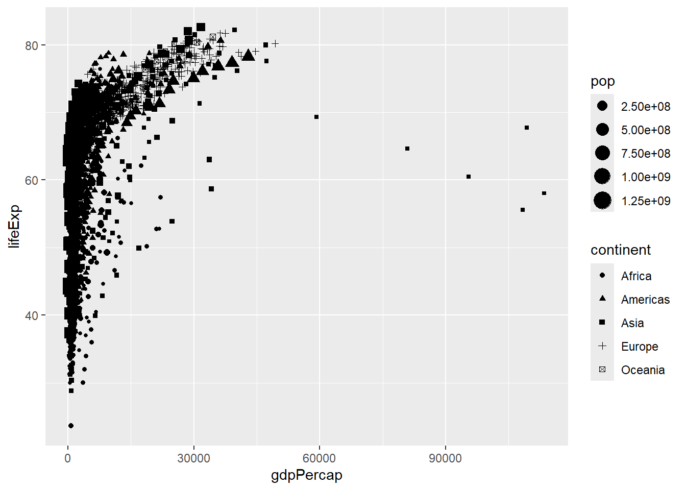
Scales and their legends have so far been handled using ggplot2 defaults. ggplot2 offers functionality to have finer control over scales and legends using the scale methods.
Scale methods are divided into functions by combinations of
the aesthetics they control.
the type of data mapped to scale.
scale_aesthetic_type
Try typing in scale_ then tab to autocomplete. This will provide some examples of the scale functions available in ggplot2.
Although different scale functions accept some variety in their arguments, common arguments to scale functions include -
name - The axis or legend title
limits - Minimum and maximum of the scale
breaks - Label/tick positions along an axis
labels - Label names at each break
values - the set of aesthetic values to map data values
We can choose specific colour palettes, such as those provided by the RColorBrewer package. This package is included with R (so you don’t need to install it) and provides palettes for different types of scale (sequential, diverging, qualitative).
library(RColorBrewer)
display.brewer.all(colorblindFriendly = TRUE)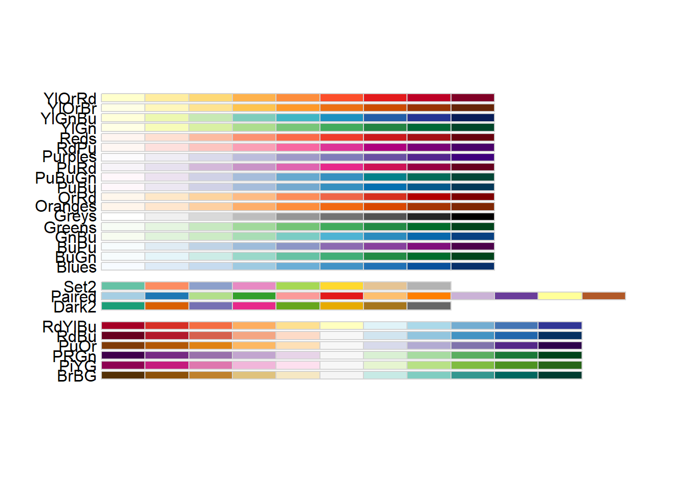
Important
When creating a plot, always check that the colour scheme is appropriate for people with various forms of colour-blindness
When experimenting with colour palettes and labels, it is useful to save the plot as an object. This saves quite a bit of typing! Notice how nothing get shown on the screen.
p <- ggplot(gapminder, aes(x = gdpPercap, y=lifeExp,col=continent)) + geom_point()Running the line of code with just p now shows the plot on the screen
p 
But we can also make modifications to the plot with the + symbol. Here, we change the colours to those defined as Set2 in RColorBrewer.
## Here we pick 6 colours from the palette
p + scale_color_manual(values=brewer.pal(6,"Set2"))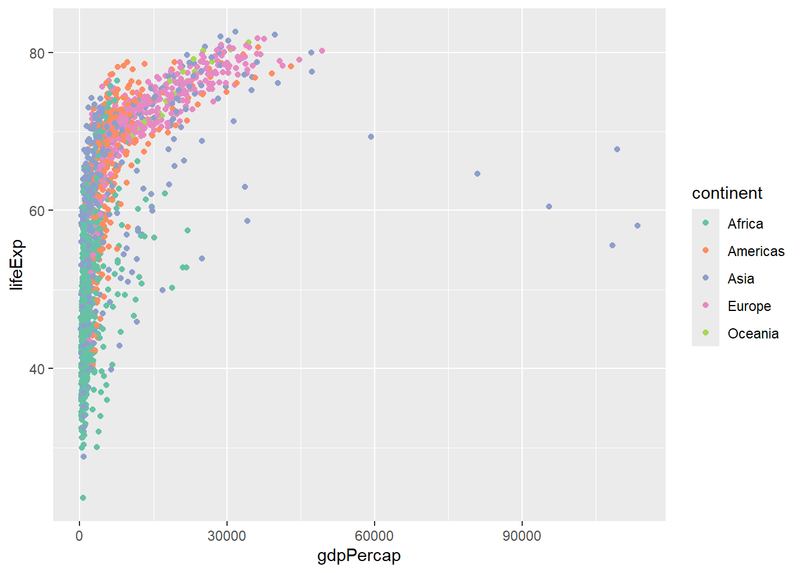
Various labels can be modified using the labs function.
p + labs(x="Wealth",y="Life Expectancy",title="Relationship between Wealth and Life Expectancy")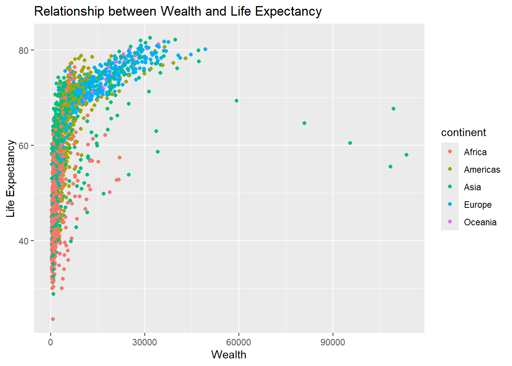
We can also modify the x- and y- limits of the plot so that any outliers are not shown. ggplot2 will give a warning that some points are excluded.
p + xlim(0,60000)Warning: Removed 5 rows containing missing values or values outside the scale range
(`geom_point()`).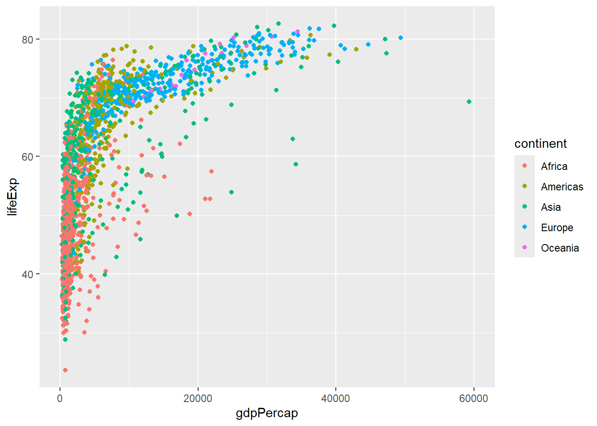
Saving is supported by the ggsave function and automatically saves the last plot that was displayed in RStudio. A variety of file formats are supported (.png, .pdf, .tiff, etc) and the format used is determined from the extension given in the file argument. The height, width and resolution can also be configured. See the help on ggsave (?ggsave) for more information.
ggsave(file="my_ggplot.png")Saving 7 x 5 in imageWarning: Removed 5 rows containing missing values or values outside the scale range
(`geom_point()`).Most aspects of the plot can be modified from the background colour to the grid sizes and font. Several pre-defined “themes” exist and we can modify the appearance of the whole plot using a theme_.. function.
p + theme_bw()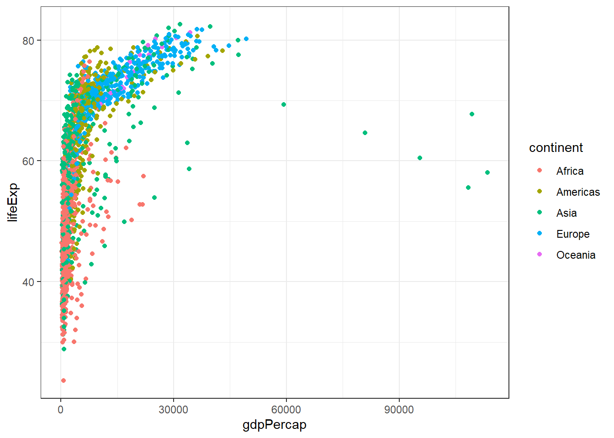
More themes are supported by the ggthemes package. You can make your plots look like the Economist, Wall Street Journal or Excel (but please don’t do this!)
## this will check if ggthemes is already installed, and will only install if it is not found
if(!require("ggthemes")) install.packages("ggthemes")Loading required package: ggthemeslibrary(ggthemes)
p + theme_excel()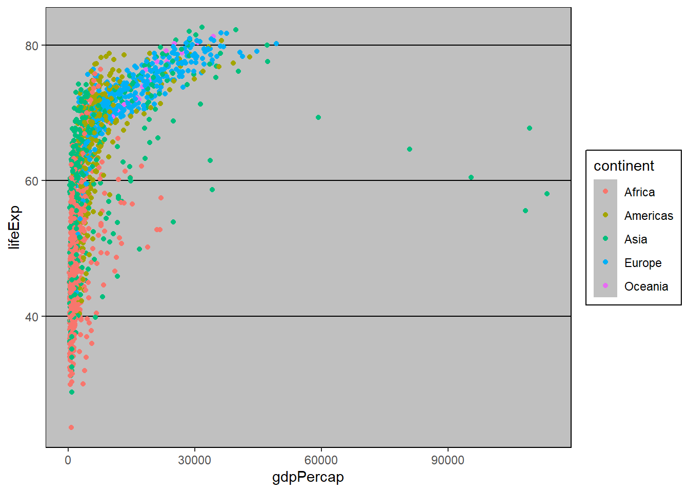
Exercise
Use a boxplot to compare the life expectancy values of Australia and New Zealand. Use a Set2 palette from RColorBrewer to colour the boxplots and apply a “minimal” theme to the plot.

Solution
gapminder %>%
filter(continent == "Oceania") %>%
ggplot(aes(x = country, y = lifeExp,fill=country)) + geom_boxplot() + scale_fill_manual(values=brewer.pal(2,"Set2")) + theme_bw()Another transformation that is useful in this case is to display the x-axis on a log\(_10\) scale. This compresses the values on the x-axis (reducing the impact of the high outliers) and makes trends easier to spot
p + scale_x_log10()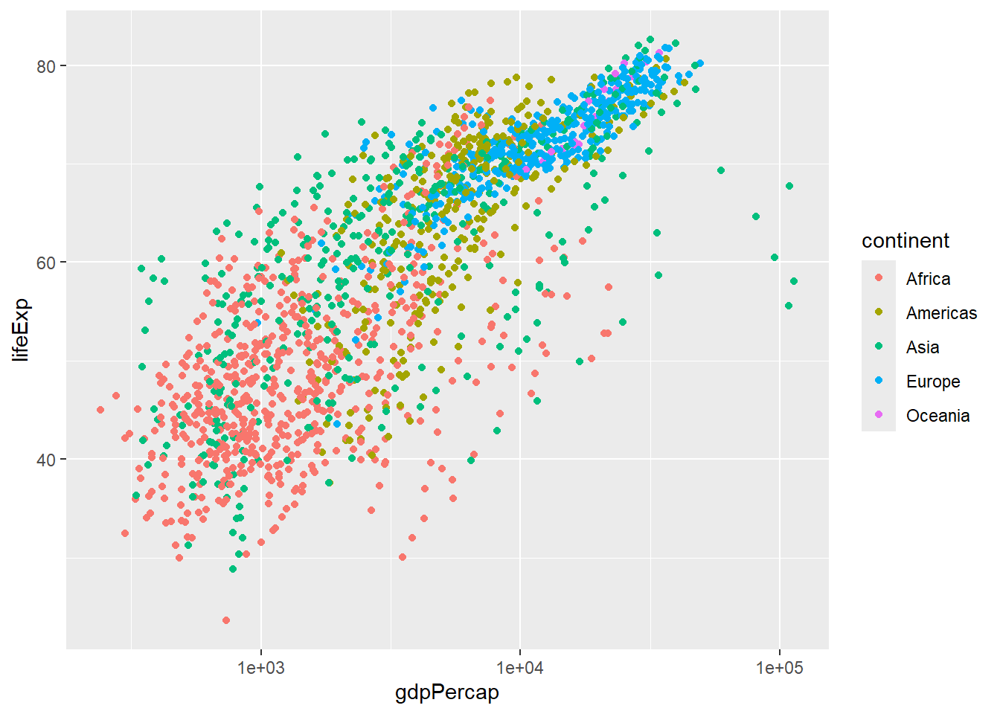
It now seems that lifeExp is increasing in a roughly linear fashion with the GDP (on a log\(_10\) scale).
About the log transformation
The logarithm of 10 (log10) is the exponent to which the base 10 must be “raised” to obtain the number 10. For example, log10(10) = 1, as 10 raised to the power of 1 equals 10.
log10(10)[1] 110^1[1] 10log10(100)[1] 210^2[1] 100This transformation helps in simplifying visualisation involving large numbers. The range of our gdpPercap values is extremely large. summary is a quick way to get various summary statistics from our data
## we will use the $ notation for now
summary(gapminder$gdpPercap) Min. 1st Qu. Median Mean 3rd Qu. Max.
241.2 1202.1 3531.8 7215.3 9325.5 113523.1 After a log10 transformation the data are much more compressed.
summary(log10(gapminder$gdpPercap)) Min. 1st Qu. Median Mean 3rd Qu. Max.
2.382 3.080 3.548 3.543 3.970 5.055 The largest value after the log\(_10\) transformation is around 5
10^5.055[1] 113501.1Facets
One very useful feature of ggplot2 is faceting. This allows you to produce plots for subsets and groupings in your data (aka “facets”). In the scatter plot above, it was quite difficult to determine if the relationship between gdp and life expectancy was the same for each continent. To overcome this, we would like a see a separate plot for each continent.
In we attempted such a task manually we might start off by plotting Africa
afr_plot<- gapminder %>%
filter(continent == "Africa") %>%
ggplot(aes(x = gdpPercap, y = lifeExp)) + geom_point() + scale_x_log10()
afr_plot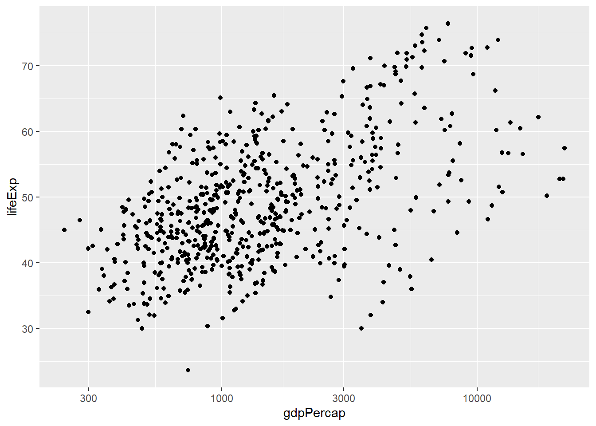
And then the same for Americas:-
amr_plot <- gapminder %>%
filter(continent == "Americas") %>%
ggplot(aes(x = gdpPercap, y = lifeExp)) + geom_point() + scale_x_log10()
amr_plot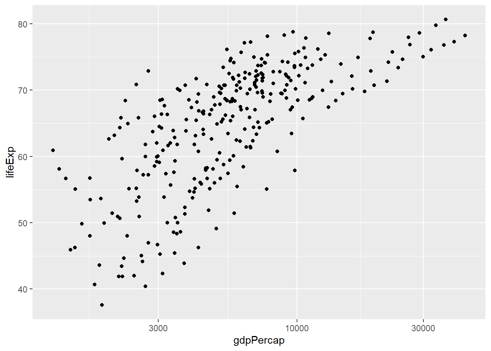
At some point we will have to stitch the plots together (which is possible, but we will cover this later) and make sure we have equivalent scales for all plots. In this setup we are manually specifying the name of the continent, which is prone to error. Again, we could use something like a for loop to make the plots for each continent. However, we aren’t covering such techniques in these materials as dplyr and ggplot2 don’t tend to require them.
As we said before, dplyr, and ggplot2 are built with the analyst in mind and have many useful features for automating some common tasks. To achieve the plot we want is surprisingly simple. To “facet” our data into multiple plots we can use the facet_wrap (1 variable) or facet_grid (2 variables) functions and specify the variable(s) we split by.
p + facet_wrap(~continent) + scale_x_log10() + xlab("GDP (log10)") + ylab("Life Expectancy")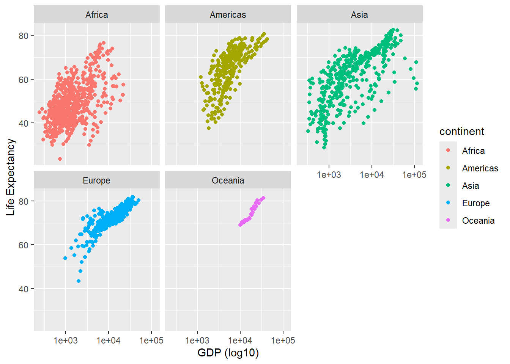
The facet_grid function will create a grid-like plot with one variable on the x-axis and another on the y-axis.
p + facet_grid(continent~year)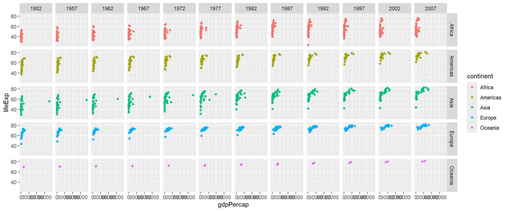
The previous plot was a bit messy as it contained all combinations of year and continent. Let’s suppose we want our analysis to be a bit more focused and disregard countries in Oceania (as there are only 2 in our dataset) and maybe years between 1997 and 2002. However, we can only “add” more information from our plots and not take anything away. Therefore the suggested approach is to pre-filter and manipulate the data into the form you want for plotting.
Weknow how to restrict the rows from the gapminder dataset using the filter function. Instead of filtering the data, creating a new data frame, and constructing the data frame from these new data we can use the%>% operator to create the data frame “on the fly” and pass directly to ggplot. Thus we don’t have to save a new data frame or alter the original data.
filter(gapminder, continent!="Oceania", year %in% c(1997,2002,2007)) %>%
ggplot(aes(x = gdpPercap, y=lifeExp,col=continent)) + geom_point() + facet_grid(continent~year)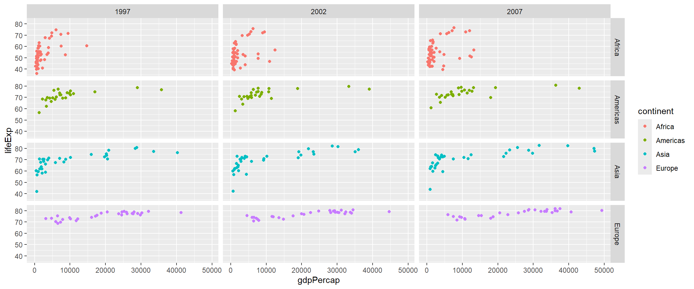
There is lots more to cover on ggplot2 and quickly we can start to understand our data without too much in the way of coding. When it comes to reporting and justifying our findings we will need to produce some numerical summaries. We tackle this in the next section.
Summarising and grouping with dplyr
We now revisit one of the tasks from the end pf Part 1, but in the context of dplyr. Suppose we want to calculate a summary statistic (average, standard deviation, etc) from the columns in our data frame. Previously we saw the “base R” way of doing this
mean(gapminder$gdpPercap)[1] 7215.327However, you can only specify one column name after the $ and the mean is calculated on the entire data frame. For a dataset such as this we probably want summaries for particular subsets e.g. different years, continents etc. We will build up to this and consider the simplest case first.
The summarise function can take any R function that takes a vector of values (i.e. a column from a data frame) and returns a single value. Some of the more useful functions include:
minminimum valuemaxmaximum valuesumsum of valuesmeanmean valuesdstandard deviationmedianmedian valueIQRthe interquartile rangen_distinctthe number of distinct valuesnthe number of observations (Note: this is a special function that doesn’t take a vector argument, i.e. column)
To calculate several statisitcs in one go we can use:-
library(dplyr)
summarise(gapminder, min(lifeExp), max(gdpPercap), mean(pop))# A tibble: 1 × 3
`min(lifeExp)` `max(gdpPercap)` `mean(pop)`
<dbl> <dbl> <dbl>
1 23.6 113523. 29601212.It is also possible to summarise using a function that takes more than one value, i.e. from multiple columns. For example, we could compute the correlation between year and life expectancy. Here we also assign names to the table that is produced.
gapminder %>%
summarise(MinLifeExpectancy = min(lifeExp),
MaximumGDP = max(gdpPercap),
AveragePop = mean(pop),
Correlation = cor(year, lifeExp))# A tibble: 1 × 4
MinLifeExpectancy MaximumGDP AveragePop Correlation
<dbl> <dbl> <dbl> <dbl>
1 23.6 113523. 29601212. 0.436Notice that the correlation is not that impressive. However, it is not particularly useful to calculate such values from the entire table as we have different continents and years. The correlation would make a lot more sense on a per-country basis. It would be possible to achieve summaries for each continent manually with some effort.
gapminder %>%
filter(continent == "Africa") %>%
summarise(MinLifeExpectancy = min(lifeExp),
MaximumGDP = max(gdpPercap),
AveragePop = mean(pop))# A tibble: 1 × 3
MinLifeExpectancy MaximumGDP AveragePop
<dbl> <dbl> <dbl>
1 23.6 21951. 9916003.However, as for the facet plot example above we have to repeat for each continent. Tedious and could cause errors.
Instead, the group_by function allows us to split the table into different categories, and compute summary statistics for each year (for example).
gapminder %>%
group_by(year) %>%
summarise(MinLifeExpectancy = min(lifeExp),
MaximumGDP = max(gdpPercap),
AveragePop = mean(pop))# A tibble: 12 × 4
year MinLifeExpectancy MaximumGDP AveragePop
<dbl> <dbl> <dbl> <dbl>
1 1952 28.8 108382. 16950402.
2 1957 30.3 113523. 18763413.
3 1962 32.0 95458. 20421007.
4 1967 34.0 80895. 22658298.
5 1972 35.4 109348. 25189980.
6 1977 31.2 59265. 27676379.
7 1982 38.4 33693. 30207302.
8 1987 39.9 31541. 33038573.
9 1992 23.6 34933. 35990917.
10 1997 36.1 41283. 38839468.
11 2002 39.2 44684. 41457589.
12 2007 39.6 49357. 44021220.More than one categorical variable can be used for finer-grain summaries. Here the summaries are for each year and continent combination
gapminder %>%
group_by(year,continent) %>%
summarise(MinLifeExpectancy = min(lifeExp),
MaximumGDP = max(gdpPercap),
AveragePop = mean(pop))`summarise()` has grouped output by 'year'. You can override using the
`.groups` argument.# A tibble: 60 × 5
# Groups: year [12]
year continent MinLifeExpectancy MaximumGDP AveragePop
<dbl> <chr> <dbl> <dbl> <dbl>
1 1952 Africa 30 4725. 4570010.
2 1952 Americas 37.6 13990. 13806098.
3 1952 Asia 28.8 108382. 42283556.
4 1952 Europe 43.6 14734. 13937362.
5 1952 Oceania 69.1 10557. 5343003
6 1957 Africa 31.6 5487. 5093033.
7 1957 Americas 40.7 14847. 15478157.
8 1957 Asia 30.3 113523. 47356988.
9 1957 Europe 48.1 17909. 14596345.
10 1957 Oceania 70.3 12247. 5970988
# ℹ 50 more rowsWe can list as many summary functions as we like. Whilst this can make our code somewhat verbose there are many helper functions available. Consider an example where we want to average all the columns in our data:-
gapminder %>%
group_by(year) %>%
summarise(MeanLifeExpectancy = mean(lifeExp),
MeanGDP = mean(gdpPercap),
MeanPop = mean(pop))# A tibble: 12 × 4
year MeanLifeExpectancy MeanGDP MeanPop
<dbl> <dbl> <dbl> <dbl>
1 1952 49.1 3725. 16950402.
2 1957 51.5 4299. 18763413.
3 1962 53.6 4726. 20421007.
4 1967 55.7 5484. 22658298.
5 1972 57.6 6770. 25189980.
6 1977 59.6 7313. 27676379.
7 1982 61.5 7519. 30207302.
8 1987 63.2 7901. 33038573.
9 1992 64.2 8159. 35990917.
10 1997 65.0 9090. 38839468.
11 2002 65.7 9918. 41457589.
12 2007 67.0 11680. 44021220.This wasn’t a huge effort to write this code. However, it would be much more tedious for a dataset with many more columns. Recognising this, we can use the convenient summarise_all function. This will return NA values for columns that do not contain numeric values.
gapminder %>%
group_by(continent) %>%
summarise_all(mean)# A tibble: 5 × 6
continent country year lifeExp pop gdpPercap
<chr> <dbl> <dbl> <dbl> <dbl> <dbl>
1 Africa NA 1980. 48.9 9916003. 2194.
2 Americas NA 1980. 64.7 24504795. 7136.
3 Asia NA 1980. 60.1 77038722. 7902.
4 Europe NA 1980. 71.9 17169765. 14469.
5 Oceania NA 1980. 74.3 8874672. 18622.The nice thing about summarise is that it can followed up by any of the other dplyr verbs that we have met so far (select, filter, arrange..etc). As the country column of the previous output containing missing values we can exclude it from further processing.
gapminder %>%
group_by(continent) %>%
summarise_all(mean) %>%
select(-country)# A tibble: 5 × 5
continent year lifeExp pop gdpPercap
<chr> <dbl> <dbl> <dbl> <dbl>
1 Africa 1980. 48.9 9916003. 2194.
2 Americas 1980. 64.7 24504795. 7136.
3 Asia 1980. 60.1 77038722. 7902.
4 Europe 1980. 71.9 17169765. 14469.
5 Oceania 1980. 74.3 8874672. 18622.Returning to the correlation between life expectancy and year, we use the group_by technique as follows:-
gapminder %>%
group_by(country) %>%
summarise(Correlation = cor(year , lifeExp))# A tibble: 142 × 2
country Correlation
<chr> <dbl>
1 Afghanistan 0.974
2 Albania 0.954
3 Algeria 0.993
4 Angola 0.942
5 Argentina 0.998
6 Australia 0.990
7 Austria 0.996
8 Bahrain 0.983
9 Bangladesh 0.995
10 Belgium 0.997
# ℹ 132 more rowsWe can then arrange the table by the correlation to see which countries have the lowest correlation
gapminder %>%
group_by(country) %>%
summarise(Correlation = cor(year , lifeExp)) %>%
arrange(Correlation)# A tibble: 142 × 2
country Correlation
<chr> <dbl>
1 Zambia -0.245
2 Zimbabwe -0.237
3 Rwanda -0.131
4 Botswana 0.184
5 Swaziland 0.261
6 Lesotho 0.291
7 Cote d'Ivoire 0.532
8 South Africa 0.559
9 Uganda 0.585
10 Congo, Dem. Rep. 0.590
# ℹ 132 more rowsWe can filter the results to find observations of interest
gapminder %>%
group_by(country) %>%
summarise(Correlation = cor(year , lifeExp)) %>%
filter(Correlation < 0)# A tibble: 3 × 2
country Correlation
<chr> <dbl>
1 Rwanda -0.131
2 Zambia -0.245
3 Zimbabwe -0.237The countries we identify could then be used as the basis for a plot.
library(ggplot2)
filter(gapminder, country %in% c("Rwanda","Zambia","Zimbabwe")) %>%
ggplot(aes(x=year, y=lifeExp,col=country)) + geom_line()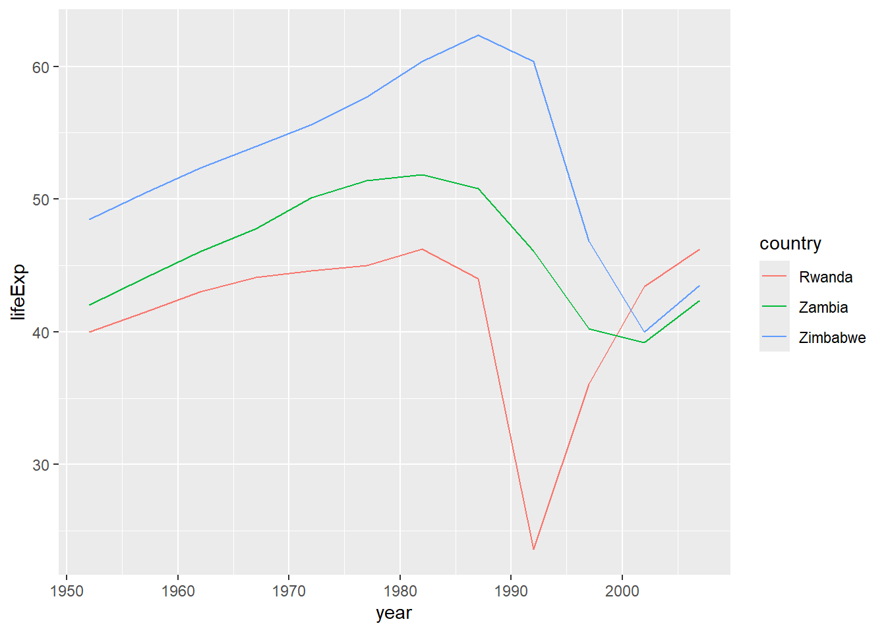
It is perhaps worth considering at this point how sophisticated our R programming has become. Suppose we had been tasked with discovering countries whose correlation between life expectancy and time is negative. At the beginning of Part 1 you may have considered such a task to be extremely complicated. However, we can achieve this in just four lines of code - and that includes the code to read the data into R 🎉
read_csv("raw_data/gapminder.csv") %>%
group_by(country) %>%
summarise(Correlation = cor(year , lifeExp)) %>%
filter(Correlation < 0)Rows: 1704 Columns: 6
── Column specification ────────────────────────────────────────────────────────
Delimiter: ","
chr (2): country, continent
dbl (4): year, lifeExp, pop, gdpPercap
ℹ Use `spec()` to retrieve the full column specification for this data.
ℹ Specify the column types or set `show_col_types = FALSE` to quiet this message.# A tibble: 3 × 2
country Correlation
<chr> <dbl>
1 Rwanda -0.131
2 Zambia -0.245
3 Zimbabwe -0.237Exercise
- Summarise the
gapminderdata in an appropriate manner to produce a plot to show the change in averagegdpPercapfor each continent over time. - see below for a suggestion
- HINT: you will need to use the
geom_colfunction to create the bar plot
- HINT: you will need to use the

Solution
group_by(gapminder, continent, year) %>%
summarise(GDP = mean(gdpPercap)) %>%
ggplot(aes(x = year, y = GDP, fill=continent)) + geom_col() + facet_wrap(~continent)Joining
In many real life situations, data are spread across multiple tables or spreadsheets. Usually this occurs because different types of information about a subject, e.g. a patient, are collected from different sources. It may be desirable for some analyses to combine data from two or more tables into a single data frame based on a common column, for example, an attribute that uniquely identifies the subject.
dplyr provides a set of join functions for combining two data frames based on matches within specified columns. For those familiar with such SQL, these operations are very similar to carrying out join operations between tables in a relational database.
As a toy example, lets consider two data frames that some results of testing whether genes A, B and C are significant in our study (gene expression, mutations, etc.)
gene_results <- data.frame(Name=LETTERS[1:3], pvalue = c(0.001, 0.1,0.01))
gene_results Name pvalue
1 A 0.001
2 B 0.100
3 C 0.010We might also have a data frame containing more data about the genes; such as which chromosome they are located on. As part of our data interpretation we might need to know where in the genome the genes are located. Note that both data frames have a column called Name. This column will be used to identify genes common to both tables.
gene_anno <- data.frame(Name = c("A","B","D"), chromosome=c(1,1,3))
gene_anno Name chromosome
1 A 1
2 B 1
3 D 3There are various ways in which we can join these two tables together. We will first consider the case of a “left join”.

Animated gif by Garrick Aden-Buie
left_join returns all rows from the first data frame regardless of whether there is a match in the second data frame. Rows with no match are included in the resulting data frame but have NA values in the additional columns coming from the second data frame.
Animations to illustrate other types of join are available at https://github.com/gadenbuie/tidy-animated-verbs
left_join(gene_results, gene_anno)Joining with `by = join_by(Name)` Name pvalue chromosome
1 A 0.001 1
2 B 0.100 1
3 C 0.010 NAright_join is similar but returns all rows from the second data frame that have a match with rows in the first data frame based on the specified column.
right_join(gene_results, gene_anno)Joining with `by = join_by(Name)` Name pvalue chromosome
1 A 0.001 1
2 B 0.100 1
3 D NA 3inner_join only returns those rows where matches could be made
inner_join(gene_results, gene_anno)Joining with `by = join_by(Name)` Name pvalue chromosome
1 A 0.001 1
2 B 0.100 1Wrap-up
We have introduced a few of the essential packages from the R tidyverse that can help with data manipulation and visualisation.
 Hopefully you will feel more confident about importing your data into R and producing some useful visualisations. You will probably have questions regarding the analysis of your own data. Some good starting points to get help are listed below.
Hopefully you will feel more confident about importing your data into R and producing some useful visualisations. You will probably have questions regarding the analysis of your own data. Some good starting points to get help are listed below.
To finish the workshop we will look at the analysis of some relevant data that we can import into R and analyse with the tools from the workshop.
Data Cleaning: A COVID-19 data example
Data for global COVID-19 cases are available online from CSSE at Johns Hopkins University on their github repository.
Note
github is an excellent way of making your code and analysis available for others to reuse and share. Private repositories with restricted access are also available. Here is a useful beginners guide.
R is capable of downloading files to our own machine so we can analyse them. We need to know the URL (for the COVID data we can find this from github, or use the address below) and can specify what to call the file when it is downloaded.
if(!file.exists("raw_data/time_series_covid19_confirmed_global.csv")){
download.file("https://raw.githubusercontent.com/CSSEGISandData/COVID-19/master/csse_covid_19_data/csse_covid_19_time_series/time_series_covid19_confirmed_global.csv",destfile = "raw_data/time_series_covid19_confirmed_global.csv")
}We can use the read_csv function as before to import the data and take a look. We can see the basic structure of the data is one row for each country / region and columns for cases on each day.
covid <- read_csv("raw_data/time_series_covid19_confirmed_global.csv")Rows: 289 Columns: 1147
── Column specification ────────────────────────────────────────────────────────
Delimiter: ","
chr (2): Province/State, Country/Region
dbl (1145): Lat, Long, 1/22/20, 1/23/20, 1/24/20, 1/25/20, 1/26/20, 1/27/20,...
ℹ Use `spec()` to retrieve the full column specification for this data.
ℹ Specify the column types or set `show_col_types = FALSE` to quiet this message.covid# A tibble: 289 × 1,147
`Province/State` `Country/Region` Lat Long `1/22/20` `1/23/20` `1/24/20`
<chr> <chr> <dbl> <dbl> <dbl> <dbl> <dbl>
1 <NA> Afghanistan 33.9 67.7 0 0 0
2 <NA> Albania 41.2 20.2 0 0 0
3 <NA> Algeria 28.0 1.66 0 0 0
4 <NA> Andorra 42.5 1.52 0 0 0
5 <NA> Angola -11.2 17.9 0 0 0
6 <NA> Antarctica -71.9 23.3 0 0 0
7 <NA> Antigua and Bar… 17.1 -61.8 0 0 0
8 <NA> Argentina -38.4 -63.6 0 0 0
9 <NA> Armenia 40.1 45.0 0 0 0
10 Australian Capit… Australia -35.5 149. 0 0 0
# ℹ 279 more rows
# ℹ 1,140 more variables: `1/25/20` <dbl>, `1/26/20` <dbl>, `1/27/20` <dbl>,
# `1/28/20` <dbl>, `1/29/20` <dbl>, `1/30/20` <dbl>, `1/31/20` <dbl>,
# `2/1/20` <dbl>, `2/2/20` <dbl>, `2/3/20` <dbl>, `2/4/20` <dbl>,
# `2/5/20` <dbl>, `2/6/20` <dbl>, `2/7/20` <dbl>, `2/8/20` <dbl>,
# `2/9/20` <dbl>, `2/10/20` <dbl>, `2/11/20` <dbl>, `2/12/20` <dbl>,
# `2/13/20` <dbl>, `2/14/20` <dbl>, `2/15/20` <dbl>, `2/16/20` <dbl>, …Much of the analysis of this dataset has looked at trends over time (e.g. increasing /decreasing case numbers, comparing trajectories). As we know by now, the ggplot2 package allows us to map columns (variables) in our dataset to aspects of the plot.
In other words, we would expect to create plots by writing code such as:-
ggplot(covid, aes(x = Date, y =...)) + ...Unfortunately such plots are not possible with the data in it’s current format. Counts for each date are containing in a different column. What we require is a column to indicate the date, and the corresponding count in the next column. Such data arrangements are known as long data; whereas we have wide data. Fortunately we can convert between the two using the tidyr package (also part of tidyverse).
## install tidyr if you don't already have it
install.packages("tidyr")
About “tidy data”
For more information on tidy data, and how to convert between long and wide data, see
For convenience we will also rename the column containing country names
## set the show_col_types argument to FALSE to suppress message about column types
library(tidyr)
covid <- read_csv("raw_data/time_series_covid19_confirmed_global.csv",show_col_types = FALSE) %>%
rename(country = `Country/Region`) %>%
pivot_longer(5:last_col(),names_to="Date", values_to="Cases")
covid# A tibble: 330,327 × 6
`Province/State` country Lat Long Date Cases
<chr> <chr> <dbl> <dbl> <chr> <dbl>
1 <NA> Afghanistan 33.9 67.7 1/22/20 0
2 <NA> Afghanistan 33.9 67.7 1/23/20 0
3 <NA> Afghanistan 33.9 67.7 1/24/20 0
4 <NA> Afghanistan 33.9 67.7 1/25/20 0
5 <NA> Afghanistan 33.9 67.7 1/26/20 0
6 <NA> Afghanistan 33.9 67.7 1/27/20 0
7 <NA> Afghanistan 33.9 67.7 1/28/20 0
8 <NA> Afghanistan 33.9 67.7 1/29/20 0
9 <NA> Afghanistan 33.9 67.7 1/30/20 0
10 <NA> Afghanistan 33.9 67.7 1/31/20 0
# ℹ 330,317 more rowsThe number of rows and columns has changed dramatically, but this is a much more usable form for dplyr and ggplot2.
Another point to note is that the dates are not in an internationally recognised format, which could cause a problem for some visualisations that rely on date order.

We can fix by explicitly converting to YYYY-MM-DD format. The as.Date function can be used to convert an existing column into standardised dates. It needs to know how the months, days and years are being specified which might look a bit obtuse. The specification needed for these data is %m/%d/%y. This means months(%m) separated by a / followed by a day (%d) followed by another / followed by the year represented by two digits (%y). Other conversions are possible including if you have dates with month names (Jan, Feb…) or four digit years. See the link below for more information.
Dealing with dates
See this website for more about representing and converting dates in R.
For more ways of dealing with dates in R see the lubridate package which can handle tasks such as calculating intervals between dates and much more
covid <- read_csv("raw_data/time_series_covid19_confirmed_global.csv",show_col_types = FALSE) %>%
rename(country = `Country/Region`) %>%
pivot_longer(5:last_col(),names_to="Date", values_to="Cases") %>%
mutate(Date=as.Date(Date,"%m/%d/%y"))
covid# A tibble: 330,327 × 6
`Province/State` country Lat Long Date Cases
<chr> <chr> <dbl> <dbl> <date> <dbl>
1 <NA> Afghanistan 33.9 67.7 2020-01-22 0
2 <NA> Afghanistan 33.9 67.7 2020-01-23 0
3 <NA> Afghanistan 33.9 67.7 2020-01-24 0
4 <NA> Afghanistan 33.9 67.7 2020-01-25 0
5 <NA> Afghanistan 33.9 67.7 2020-01-26 0
6 <NA> Afghanistan 33.9 67.7 2020-01-27 0
7 <NA> Afghanistan 33.9 67.7 2020-01-28 0
8 <NA> Afghanistan 33.9 67.7 2020-01-29 0
9 <NA> Afghanistan 33.9 67.7 2020-01-30 0
10 <NA> Afghanistan 33.9 67.7 2020-01-31 0
# ℹ 330,317 more rowsAnother useful modification is to make sure only one row exists for each country. If we look at the data for some countries (e.g. China and UK) there are different entries for provinces and oversees territories. So we can change the Cases to be the sum of all cases for that country on a particular day. We can do this using the group_by and summarise functions from above.
covid <- read_csv("raw_data/time_series_covid19_confirmed_global.csv", show_col_types = FALSE) %>%
rename(country = `Country/Region`) %>%
pivot_longer(5:last_col(),names_to="Date", values_to="Cases") %>%
mutate(Date=as.Date(Date,"%m/%d/%y")) %>%
group_by(country,Date) %>%
summarise(Cases = sum(Cases))`summarise()` has grouped output by 'country'. You can override using the
`.groups` argument.covid# A tibble: 229,743 × 3
# Groups: country [201]
country Date Cases
<chr> <date> <dbl>
1 Afghanistan 2020-01-22 0
2 Afghanistan 2020-01-23 0
3 Afghanistan 2020-01-24 0
4 Afghanistan 2020-01-25 0
5 Afghanistan 2020-01-26 0
6 Afghanistan 2020-01-27 0
7 Afghanistan 2020-01-28 0
8 Afghanistan 2020-01-29 0
9 Afghanistan 2020-01-30 0
10 Afghanistan 2020-01-31 0
# ℹ 229,733 more rowscovid# A tibble: 229,743 × 3
# Groups: country [201]
country Date Cases
<chr> <date> <dbl>
1 Afghanistan 2020-01-22 0
2 Afghanistan 2020-01-23 0
3 Afghanistan 2020-01-24 0
4 Afghanistan 2020-01-25 0
5 Afghanistan 2020-01-26 0
6 Afghanistan 2020-01-27 0
7 Afghanistan 2020-01-28 0
8 Afghanistan 2020-01-29 0
9 Afghanistan 2020-01-30 0
10 Afghanistan 2020-01-31 0
# ℹ 229,733 more rowsSince we previously renamed the country column in covid and both data frames now have a column called country we can use a left_join.
left_join(gapminder, covid)Joining with `by = join_by(country)`Warning in left_join(gapminder, covid): Detected an unexpected many-to-many relationship between `x` and `y`.
ℹ Row 1 of `x` matches multiple rows in `y`.
ℹ Row 1 of `y` matches multiple rows in `x`.
ℹ If a many-to-many relationship is expected, set `relationship =
"many-to-many"` to silence this warning.# A tibble: 1,755,816 × 8
country continent year lifeExp pop gdpPercap Date Cases
<chr> <chr> <dbl> <dbl> <dbl> <dbl> <date> <dbl>
1 Afghanistan Asia 1952 28.8 8425333 779. 2020-01-22 0
2 Afghanistan Asia 1952 28.8 8425333 779. 2020-01-23 0
3 Afghanistan Asia 1952 28.8 8425333 779. 2020-01-24 0
4 Afghanistan Asia 1952 28.8 8425333 779. 2020-01-25 0
5 Afghanistan Asia 1952 28.8 8425333 779. 2020-01-26 0
6 Afghanistan Asia 1952 28.8 8425333 779. 2020-01-27 0
7 Afghanistan Asia 1952 28.8 8425333 779. 2020-01-28 0
8 Afghanistan Asia 1952 28.8 8425333 779. 2020-01-29 0
9 Afghanistan Asia 1952 28.8 8425333 779. 2020-01-30 0
10 Afghanistan Asia 1952 28.8 8425333 779. 2020-01-31 0
# ℹ 1,755,806 more rowsIf we hadn’t used rename previously, the joining code would look like this
left_join(gapminder, covid, by = c("county" = "Country/Region"))Furthermore, we might also want to just use the 2007 rows from gapminder.
filter(gapminder, year == 2007) %>%
left_join(covid)Joining with `by = join_by(country)`# A tibble: 146,318 × 8
country continent year lifeExp pop gdpPercap Date Cases
<chr> <chr> <dbl> <dbl> <dbl> <dbl> <date> <dbl>
1 Afghanistan Asia 2007 43.8 31889923 975. 2020-01-22 0
2 Afghanistan Asia 2007 43.8 31889923 975. 2020-01-23 0
3 Afghanistan Asia 2007 43.8 31889923 975. 2020-01-24 0
4 Afghanistan Asia 2007 43.8 31889923 975. 2020-01-25 0
5 Afghanistan Asia 2007 43.8 31889923 975. 2020-01-26 0
6 Afghanistan Asia 2007 43.8 31889923 975. 2020-01-27 0
7 Afghanistan Asia 2007 43.8 31889923 975. 2020-01-28 0
8 Afghanistan Asia 2007 43.8 31889923 975. 2020-01-29 0
9 Afghanistan Asia 2007 43.8 31889923 975. 2020-01-30 0
10 Afghanistan Asia 2007 43.8 31889923 975. 2020-01-31 0
# ℹ 146,308 more rowsExercise
What plots and summaries can you make from these data?
- Plotting the number of cases over time for certain countries
- Which country in each continent currently has the highest number of cases?
- Normalise the number of cases for population size (using 2007 population figures as a population estimate)?
- e.g. cases per 100,000
- Which European countries have the highest number of cases per 100,000 population
Some solutions
Compare trajectories of different countries. The %in% operator is an alternative to or (|) to find a country name that can have a number of possibilities.
covid <- read_csv("raw_data/time_series_covid19_confirmed_global.csv") %>%
rename(country = `Country/Region`) %>%
pivot_longer(5:last_col(),names_to="Date", values_to="Cases") %>%
mutate(Date=as.Date(Date,"%m/%d/%y")) %>%
group_by(country,Date) %>%
summarise(Cases = sum(Cases))Rows: 289 Columns: 1147
── Column specification ────────────────────────────────────────────────────────
Delimiter: ","
chr (2): Province/State, Country/Region
dbl (1145): Lat, Long, 1/22/20, 1/23/20, 1/24/20, 1/25/20, 1/26/20, 1/27/20,...
ℹ Use `spec()` to retrieve the full column specification for this data.
ℹ Specify the column types or set `show_col_types = FALSE` to quiet this message.
`summarise()` has grouped output by 'country'. You can override using the `.groups` argument.filter(covid, country %in% c("United Kingdom","France","Spain")) %>%
ggplot(aes(x = Date, y = Cases,col=country)) + geom_line()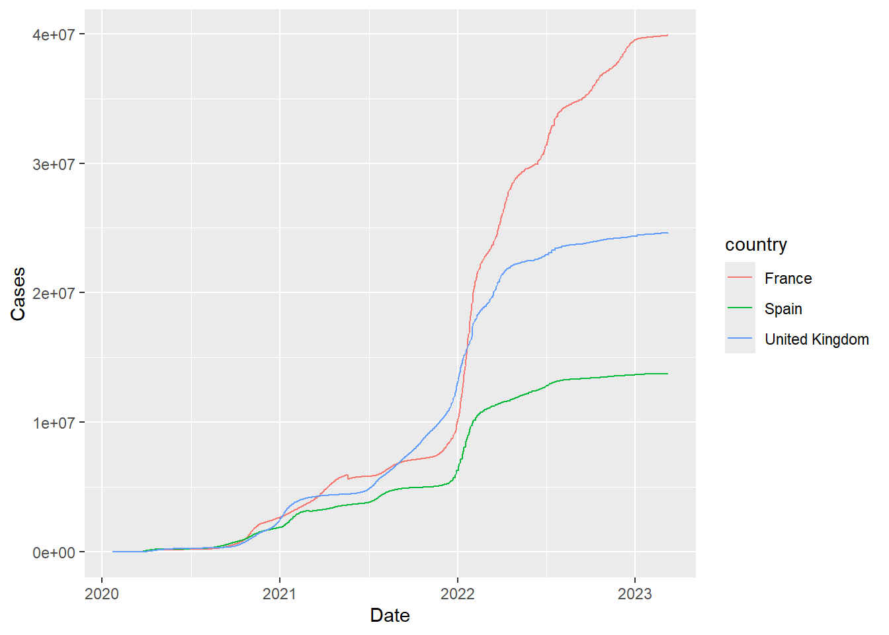
To explore the european data on a particular date, we first filter gapminder appropriately
filter(gapminder, year == 2007,continent=="Europe") %>%
left_join(covid) %>%
filter(Date == "2023-01-13") %>%
mutate(Cases = round(Cases / (pop / 1e5)))Joining with `by = join_by(country)`# A tibble: 28 × 8
country continent year lifeExp pop gdpPercap Date Cases
<chr> <chr> <dbl> <dbl> <dbl> <dbl> <date> <dbl>
1 Albania Europe 2007 76.4 3.60e6 5937. 2023-01-13 9277
2 Austria Europe 2007 79.8 8.20e6 36126. 2023-01-13 69987
3 Belgium Europe 2007 79.4 1.04e7 33693. 2023-01-13 45093
4 Bosnia and Herzego… Europe 2007 74.9 4.55e6 7446. 2023-01-13 8813
5 Bulgaria Europe 2007 73.0 7.32e6 10681. 2023-01-13 17672
6 Croatia Europe 2007 75.7 4.49e6 14619. 2023-01-13 28181
7 Denmark Europe 2007 78.3 5.47e6 35278. 2023-01-13 62970
8 Finland Europe 2007 79.3 5.24e6 33207. 2023-01-13 27654
9 France Europe 2007 80.7 6.11e7 30470. 2023-01-13 64906
10 Germany Europe 2007 79.4 8.24e7 32170. 2023-01-13 45637
# ℹ 18 more rowsTry to make example similar to https://www.statista.com/statistics/1110187/coronavirus-incidence-europe-by-country/. We’re not using up-to-date figures for population so there will be some differences. The two data frames can be joined because they have a column name in common (country). Most of the country names that appear in gapminder also appear in the covid dataset, so not much data is lost in the join.
Since we are interested in European countries for this dataset, we pre-filter the gapminder data. Also, we only need the population values from 2007.
filter(gapminder, year == 2007,continent=="Europe") %>%
left_join(covid) %>%
filter(Date == "2022-01-06") %>%
mutate(Cases = round(Cases / (pop / 1e5))) %>%
ggplot(aes(x = Cases, y = country)) + geom_col()Joining with `by = join_by(country)`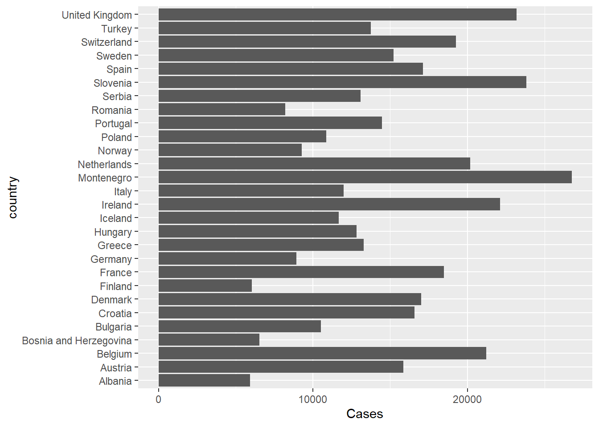
The default ordering for the bars is alphabetical, which is probably not a natural choice. The forcats package, which is part of tidyverse allows factors in a data frame to be re-ordered and re-labeled.
In particular, we can use the fct_reorder function to reorder the country names according to the number of cases. This can be done inside the ggplot2 function itself.
## this will install the package if it is not already installed
if(!require(forcats)) install.packages(forcats)Loading required package: forcatsfilter(gapminder, year == 2007,continent=="Europe") %>%
left_join(covid) %>%
filter(Date == "2023-01-13") %>%
mutate(Cases = round(Cases / (pop / 1e5))) %>%
ggplot(aes(x = Cases, y = forcats::fct_reorder(country,Cases))) + geom_col()Joining with `by = join_by(country)`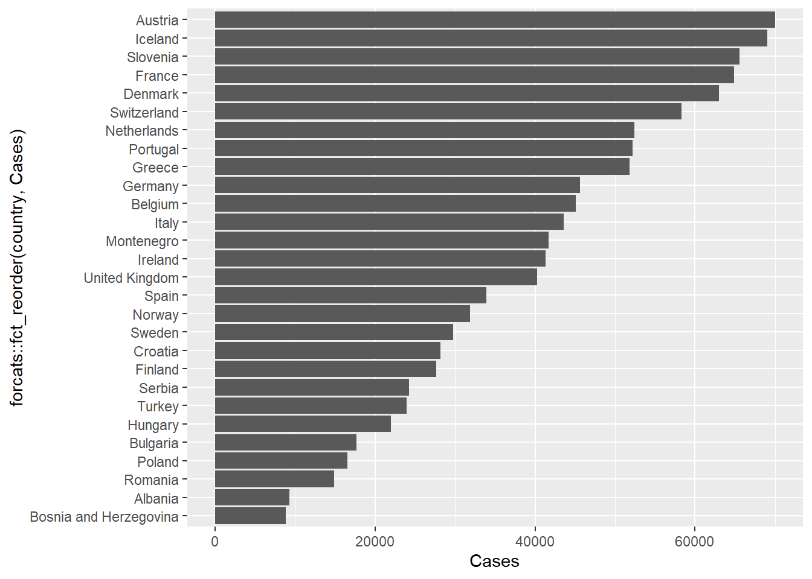
A heatmap of number of cases over time (similar to that reported by the BBC) can be achieved using a geom_tile
### Get the 2007 gapminder data to avoid repeating data
filter(gapminder, year == 2007, continent=="Europe") %>%
left_join(covid) %>%
filter(!is.na(Cases)) %>% ## remove countries with missing values%>%
mutate(Cases = round(Cases / (pop / 1e5))) %>%
ggplot(aes(x = Date, y = country,fill=Cases)) + geom_tile() + scale_fill_viridis_c()Joining with `by = join_by(country)`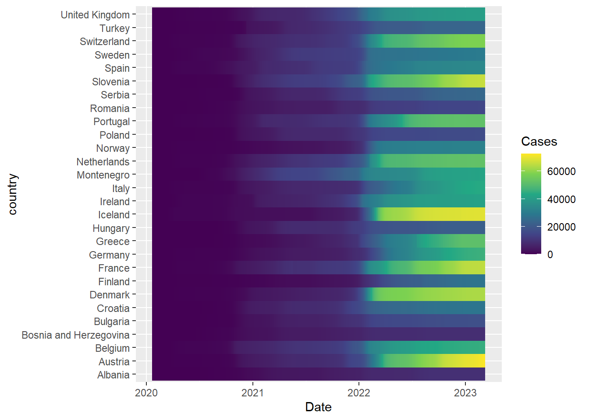